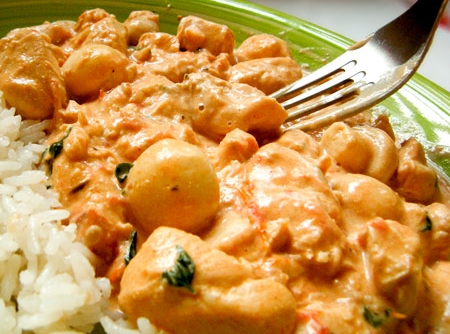

Estrogonofe
Autor: Silvia Martins

Tempo de Preparação: 1 hora
Rendimento: 10 porções
Informação Nutricional:
400 kcal,
30 g
Ingredientes:
-
3 unidade(s) de peito de frango desossado em cubos médios
-
2 unidade(s) de cebola ralada(s)
-
quanto baste de sal
-
1 lata(s) de molho de tomate
-
3 colher(es) (sopa) de catchup
-
1 colher(es) (sopa) de molho inglês
-
1 colher(es) (sopa) de mostarda
-
1 xícara(s) (chá) de champignon em conserva
-
1 lata(s) de creme de leite
-
4 xícara(s) (café) de conhaque
-
3 colher(es) (sopa) de margarina
Modo de Preparo:
Leve ao fogo em uma panela a margarina, as cebolas, deixe no fogo até murchar.
Em seguida coloque os peitos de frango, deixe refogar até alourar, junte o champignon, a pimenta, o molho de tomate o catchup, o molho inglês, a mostarda, o sal e conhaque.
Deixe ferver por 5 minutos em fogo médio.
Após, coloque o creme de leite e desligue imediatamente.
Sirva quente acompanhado de arroz branco e batata palha.
56 pessoas avaliaram essa receita
...